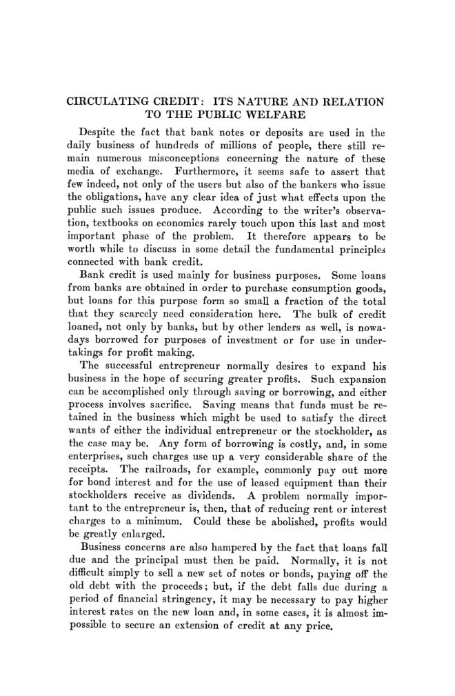

King, 1920: quem paga quando os bancos criam crédito
Leitura: 8 min
Willford I. King trata notas e depósitos bancários como empréstimos sem juros e estima em US$ 60 bilhões, a preços de 1920, a riqueza transferida pela expansão do crédito desde 1914.


Imagine-se, propõe Willford I. King, que o Tesouro dos Estados Unidos anunciasse que todo dia jogaria um milhão de dólares em ouro da sacada de seu prédio em Washington. O ouro seria um presente pago pelos contribuintes. Mas catar moedas na calçada não seria um bom negócio: juntaria tanta gente que pouca coisa caberia a cada um. Com os bancos, diz King, acontece o mesmo. Eles recebem do público uma espécie de dotação, mas se multiplicam até que a parte de cada um mal cubra custos e um lucro razoável.
O artigo, publicado no número de dezembro de 1920 da American Economic Review, pergunta o que é o crédito bancário e quem ganha e perde quando ele se expande. Para King, os livros-texto raramente tratam desta última questão, que considera a mais importante.
Por que uma promessa à vista é um empréstimo grátis?
Quem toma emprestado paga juros e corre o risco de não conseguir renovar a dívida num aperto financeiro. Os governos descobriram há muito tempo uma saída: emitir promessas de pagar moedas à vista, o papel-moeda. À primeira vista, seria a obrigação mais incômoda, porque pode ser cobrada a qualquer momento. Na prática, se o público acredita no pagamento, a nota vale tanto quanto a moeda, passa de mão em mão e quase nunca é apresentada para resgate. Quem a aceita em troca de bens empresta ao emissor sem cobrar juros.
Os bancos imitaram o governo. As notas bancárias, depois que as notas dos bancos estaduais foram tributadas até desaparecer e as dos bancos nacionais passaram a ter garantia federal, eram aceitas sem exame. Mas as restrições legais tornavam sua emissão pouco lucrativa, e a forma comum de crédito circulante passou a ser o depósito à vista. Notas e depósitos, argumenta King, são quase a mesma coisa: promessas de pagar à vista, usadas para comprar e pagar dívidas.
Uma empresa comum não consegue fazer circular suas próprias promessas; o público só associa pagamento imediato a bancos. Daí, explica King, os bancos criados para emprestar a seus próprios fundadores: o empresário entrega sua nota ao banco, recebe um depósito, compra equipamentos com cheques e recebe de volta, como dividendo, os juros que pagou. Para o conjunto dos bancos, um dólar de reserva sustenta de quatro a oito dólares de empréstimos.
Quem perde quando o crédito se expande?
O raciocínio de King parte da teoria quantitativa: mantidas as demais condições, os preços variam com o meio circulante. Num exemplo hipotético, com US$ 10 bilhões de dinheiro e depósitos e US$ 100 bilhões de dívidas privadas, uma expansão de um bilhão nos depósitos elevaria os preços em 10% e reduziria em US$ 10 bilhões o valor real do que os devedores devem. Os assalariados perdem enquanto os salários atrasam; os donos de dinheiro e depósitos perdem o poder de compra que os novos depósitos representam.
Parte das perdas se cancela, porque muitos depositantes são também tomadores. Mas quem tem dinheiro ou depósitos sem dever ao banco perde de verdade. Os bancos, em conjunto, ganham, porque os preços sobem menos que os depósitos enquanto o estoque de moeda não cresce.
Qual foi o papel do Federal Reserve?
Os criadores do Federal Reserve, lembra King, se orgulhavam de ter tornado cada dólar mais eficiente, capaz de sustentar mais crédito. Os números lhes davam razão: a razão entre reservas e depósitos dos bancos nacionais caiu de 24,29% em 1916 para 10,65% em 1918. A maioria dos economistas, observa, aceitou sem protesto que isso fosse bom para todos.
King calcula o custo. Avalia que o dólar perdeu 55% do poder de compra que tinha em 1914. As dívidas devidas a terceiros que não bancos somavam então pelo menos US$ 30 bilhões, o que significaria transferir cerca de US$ 16 bilhões de credores para devedores, a preços de 1914. Somadas as perdas dos assalariados e dos donos de depósitos, chega a US$ 25 bilhões a preços de 1914, ou US$ 60 bilhões a preços de 1920.
“A principal maldade de um pânico monetário é transferir injustamente muita riqueza” (“The principal evil of a money panic is that it unjustly transfers much wealth”)
Se é isso, argumenta, o sistema que tornou os pânicos quase impossíveis transferiu mais riqueza do que todos os pânicos da história juntos. Rejeita a explicação pela guerra: a inflação continuava com a indústria de volta ao normal. Para King, o destino monetário do país estava nas mãos de um Federal Reserve Board incapaz de resistir aos pedidos de dinheiro fácil. Com reserva de 100% sobre os depósitos, em vez da reserva provisória de 35%, e um redesconto mínimo de cerca de 12%, a moeda teria sido elástica, e não apenas expansível.
O que a inflação faz com a poupança e o trabalho?
King atribui à inflação também efeitos morais. Quem vê metade de suas economias de uma vida, em títulos, cadernetas e apólices, passar a quem nada fez para merecê-las não continuará a pregar a poupança. O assalariado que vê sua renda real cair abaixo da que tinha como iniciante não ensinará aos filhos o valor do trabalho persistente. Um sistema que separa a recompensa do esforço, conclui, acaba por reduzir a produção e aumentar o descontentamento.
A deflação que ele previa não seria uma reparação. Tomaria dos devedores e daria aos credores, mas os credores de amanhã não seriam os de ontem. Inflação e deflação, escreve, são ambas injustas, e nenhuma desfaz mais que uma fração do mal da outra. A estabilidade do dólar seria mais fácil se os depósitos crescessem aproximadamente no ritmo do volume físico dos negócios.
O crédito bancário baixa os juros?
A última parte trata dos juros. Para King, não existe uma taxa de juros, mas uma em cada mercado de empréstimos, todas influenciando umas às outras, como o preço do milho e o da aveia. No mercado de empréstimos à vista de Nova York, onde quase todo o crédito vem dos bancos, as taxas ficavam por meses em 2% ou 3%, enquanto títulos de primeira linha rendiam quase o dobro. Ali, o piso dos juros seria dado pelo custo do serviço bancário, e não pela disposição dos indivíduos a poupar.
Num país em que os depósitos são o principal meio de pagamento, porém, a expansão geral do crédito eleva os preços quase na mesma proporção, e com eles o volume que cada tomador precisa pedir. Por isso, conclui, a expansão recente não baixou de forma duradoura os juros dos empréstimos bancários. Para um banco isolado, o melhor é expandir enquanto os outros ficam parados; numa expansão geral, cada um precisa acompanhar para não perder em termos reais.
O artigo termina com cinco conclusões: o crédito circulante é um modo de tomar emprestado sem pagar juros e a fonte do lucro bancário; seu limite principal é o custo do serviço bancário; a redução das reservas legais transferiu cerca de US$ 60 bilhões de credores a devedores e de assalariados a empresários; reservas, depósitos e moeda precisam ser estabilizados; e a expansão não reduziu duradouramente os juros.
“O aumento da eficiência do dólar resultou muitas vezes numa eficiência humana muito menor.” (“Increasing dollar efficiency has too often resulted in greatly diminished human efficiency.”)
Na minha leitura
Na minha leitura, o artigo é uma análise de incidência da inflação. King trata a expansão do crédito como um imposto não votado, cobrado de credores, assalariados e donos de dinheiro, e o mede com a teoria quantitativa e números agregados simples. O método é rudimentar, mas a pergunta, quem paga a expansão monetária, é a mesma que orienta hoje a análise da senhoriagem e do imposto inflacionário.
O segundo ponto é a distinção entre o efeito sobre preços e o efeito sobre juros. King percebe que a expansão do crédito baixa os juros num mercado restrito, mas não no conjunto da economia, porque a alta de preços eleva a demanda por empréstimos. É uma versão inicial da ideia de que a política monetária não fixa duradouramente a taxa de juros real.
Glossário
- Crédito circulante
- promessas bancárias pagáveis à vista, como notas e depósitos, usadas como dinheiro.
- Greenbacks
- notas do governo americano emitidas na Guerra Civil e mantidas em circulação.
- Teoria quantitativa
- ideia de que o nível de preços varia com a quantidade de meio circulante.
- Eficiência do dólar
- expressão da época para o volume de crédito sustentado por cada dólar de reserva.
- Redesconto
- empréstimo do banco central aos bancos, garantido por títulos que estes descontaram.
- Empréstimos à vista
- empréstimos de Nova York garantidos por ações e títulos, resgatáveis a qualquer momento.
Fontes
- Circulating Credit: Its Nature and Relation to the Public Welfare — Willford I. King (pp. 738–754). JSTOR · Internet Archive (PDF)
- Edição completa, com os demais artigos: Nº 167 do Arquivo.
Documento em domínio público (EUA, publicado antes de 1931), via JSTOR Early Journal Content e Internet Archive. Resumo e comentário do autor deste site, sem afiliação com a American Economic Association. Encontrou um erro? Escreva: a correção é publicada no próprio texto, com data.
↑ Nº 167 · O crédito que não paga juros e o cartão dos mineiros de Butte Brissenden, 1920: o cartão que os mineiros de Butte precisavam ter →